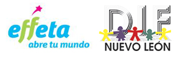

| CONFERENCIAS | |||
| Hora | Lugar | Expositor | Tema |
| 09:30 a.m. | Sala polivalente del CIDET | Presidium | Inaguración- Presentación del Diplomado en Derechos Humanos y entrega de reconocimiento, así como el diplomado de LSM |
| 11:10 a.m. | Sala polivalente del CIDET | Panel de Género | Equidad Social y Género |
| 01:00 pm | Pasillo Central | Effeta | Exposición Fotográfica "Veo, Siento, Soy" |
| 02:30 p.m. | Sala polivalente del CIDET | Mayra Patricia Cantú | Voluntariado FIME |
| 04:10 p.m. | Sala polivalente del CIDET | Diego Martin Herrera | Responsabilidad Social Universitaria |
| 05:00 p.m. | Sala polivalente del CIDET | Alejandro Pérez | Vialidad Responsable |
| TALLERES | |||
| Hora | Lugar | Tallerista | Tema |
| 11:00 a.m | Sala de usos múltiples CIDET (posgrado 2do piso) | Andrea Catalina | Pintura con la boca |
| 11:00 a.m. | 11-201 | Pequitas de amor | Solidaridad |
| 02:00 p.m. | 11-201 | I.C.C. Silvia Isabel Wabi Torres | "Libera tus Bloqueos y Alcanza el Éxito" |
| 02:00 p.m. | 11-203 | Comisión Estatal de Derechos Humanos | Violencia en el Noviazgo |
| 04:00 p.m. | 11-202 | Ana Karen Gutiérrez | Dime qué piensas y te diré quién eres |
| DEPORTES | |||
| Hora inicio | Lugar | Deporte | |
| 10:00 a.m. | Polideportivo | Curso Vivencial silla de ruedas | |
| 11:00 a.m | Polideportivo | Curso Vivencial silla de ruedas | |
| 12:00 p.m. | Polideportivo | Curso Vivencial silla de ruedas | |
| 01:00 p.m. | Polideportivo | Curso Vivencial silla de ruedas | |
| CONFERENCIAS | |||
| Hora inicio | Lugar | Expositor | Tema |
| 09:45 a.m. | Sala Polivalente del CIDET | Dr. Rodolfo Morales | LIFE CYCLE ASSESSMENT |
| 10:30 a.m. | Sala Polivalente del CIDET | José Antonio Romero López (OMA) | Acciones Sustentable para el Desarrollo |
| 11:30 a.m. | Sala Polivalente del CIDET | Presentación del Comité de sustentabilidad y entrega de nombramientos | |
| 12:50 p.m. | Sala Polivalente del CIDET | Evaristo Gómez Davalo | Sin miedo a vivir |
| 02:30 p.m. | Sala Polivalente del CIDET | Minerva Martinez (Comisión Estatal de Derechos Humanos) | Derechos Humanos |
| 04:10 p.m. | Sala Polivalente del CIDET | Ileana Hernández (Secretaría de Salud) | Ludopatía |
| 05:00 p.m. | Sala Polivalente del CIDET | Cambiando Vidas | Creando conciencia |
| TALLERES | |||
| Hora inicio | Lugar | Tallerista | Tema |
| 11:00 a.m. | Sala usos múltiples CIDET | UNIDEA | Sensibilidad |
| 11:00 a.m. | 11-203 | Pastoral Universitaria | Agentes de Paz |
| 11:00 a.m. | 11-202 | DIF NL | Planeación familiar |
| 02:00 p.m. | 11-201 | Big Turtle | Reciclaje |
| 02:00 p.m. | 11-202 | Jose Angel Garza (Garza G Consultores) | Seguridad e Higiene |
| 05:00 pm | Edificio 11, segundo piso | Mario Eduardo Carrillo Ruiz y Laura Patricia Del Bosque Vega | "No te cases, primero escucha lo que tenemos que decirte" |
| DEPORTES | |||
| Hora inicio | Lugar | Deporte | |
| 10:00 a.m. | Polideportivo | Rugby Silla de Ruedas | |
| 11:00 a.m. | Polideportivo | Rugby Silla de Ruedas | |
| 12:00 p.m. | Polideportivo | Basquetbol Silla de Ruedas | |
| 01:00 p.m. | Polideportivo | Basquetbol Silla de Ruedas | |
| 03:00 p.m. | FIME | Rally de valores | |
| 04:00 p.m. | Edificio 3 | Rappel | |
| CONFERENCIAS | |||
| Hora inicio | Lugar | Expositor | Tema |
| 09:30 a.m. | Sala Polivalente del CIDET | Lic. Eduardo Francisco Núñez Camacho - Colaborador de SEDESOL - Experiencia de amor | Encuentra tu compromiso |
| 11:10 a.m. | Sala Polivalente del CIDET | Ing. Raúl Pérez (Cambiando Vidas) | Creando Conciencia |
| 12:50 p.m. | Sala Polivalente del CIDET | Sergio Garcia Kabande | Voluntad sin limite |
| 02:30 p.m. | Sala Polivalente del CIDET | CAYAM | Dejando Huella en el alma del niño del futuro de Mexico |
| 04:10 p.m. | Sala Polivalente del CIDET | Clausura | Presentación de “SUMA+E Al Voluntariado” y del “Comité de Sustentabilidad” y Clausura |
| TALLERES | |||
| Hora inicio | Lugar | Tallerista | Tema |
| 11:00 a.m. | 11-201 | Martha Elia García | ISO14000 |
| 11:00 a.m. | 11-203 | INJUVE | Lenguaje a Señas Mexicano |
| 02:00 p.m. | 11-203 | INJUVE | Lenguaje a Señas Mexicano |
| 02:00 p.m. | 11-202 | CRUZ VERDE | Primeros auxilios |


